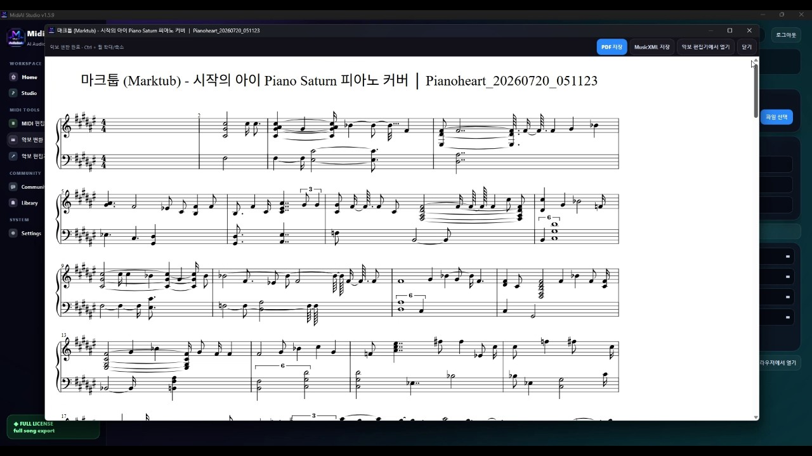

Landing · MusicXML
MusicXML for Modern Score Workflows
MusicXML is the open exchange format that keeps digital sheet music editable across notation apps.

What is MusicXML?
MusicXML stores symbolic score information—pitches, rhythms, markings—optimized for notation interchange, unlike MIDI’s performance focus.
How it works
Recognize or create a score, exchange via MusicXML, and optionally realize playback through MIDI.
- Decide if you need notation structure (MusicXML) or performance data (MIDI).
- Convert or edit in MidiAI Studio score/MIDI tools.
- Validate voices and measures.
- Export to your notation app or DAW.
Features that matter for MusicXML
- Score ↔ MIDI oriented tooling
- PDF/MusicXML related paths
- Editor cleanup
- Official business & support presence
Screenshots


FAQ
What is MusicXML?
MusicXML stores symbolic score information—pitches, rhythms, markings—optimized for notation interchange, unlike MIDI’s performance focus.
How do I get better accuracy?
Use cleaner sources, convert shorter sections first, and always edit the MIDI draft. See best practices below.
Does MidiAI Studio support this workflow?
Yes. MidiAI Studio is built for AI MIDI conversion on Windows with editing and score-related export paths. Start from the downloads page.
Is this free?
A free trial download is available. Lifetime licensing unlocks full conversion and editing capabilities—see the purchase page for current pricing.
Where is company / support information?
See the about page for publisher details, patch notes for version history, and support for 1:1 help.
Deeper notes for long-term skill
Treat every conversion as a small research project. Write down what failed: was it source noise, extreme polyphony, unclear engraving, or tempo drift? That log becomes your personal accuracy playbook and compounds faster than randomly retrying settings.
Build a template project in your DAW with favorite piano, pad, and bass instruments ready for converted MIDI. The less friction between “export MIDI” and “hear something musical,” the more consistently you’ll finish edits instead of abandoning drafts.
When collaborating, send both the MIDI and a short note about assumed tempo, key, and leftover problem measures. Clear communication prevents partners from “fixing” musical choices that were intentional.
Revisit older conversions after software updates. Converter quality improves over time; a file that needed heavy cleanup last quarter may need less work after a patch. Check the official patch notes before large batch jobs.
Finally, keep ethics close to craft. Use conversions to learn, arrange, and create—not to misrepresent authorship. Crediting sources and respecting rights is part of professional musicianship in the AI era.
Checklist before you publish or share
- Verify key signature and tempo map.
- Scan for overlapping note duplicates.
- Confirm instrument mapping and octave placement.
- Listen once without looking at the piano roll.
- Listen again focusing only on rhythm.
- Export a dated filename (project-title-v03.mid).
Additional practice tip: isolate one musical dimension per listen-pass—pitch only, then rhythm only, then dynamics only. Separating attention reveals different error classes that a single casual listen will miss, especially after 328-note dense passages.
Additional practice tip: isolate one musical dimension per listen-pass—pitch only, then rhythm only, then dynamics only. Separating attention reveals different error classes that a single casual listen will miss, especially after 543-note dense passages.
Additional practice tip: isolate one musical dimension per listen-pass—pitch only, then rhythm only, then dynamics only. Separating attention reveals different error classes that a single casual listen will miss, especially after 488-note dense passages.
Additional practice tip: isolate one musical dimension per listen-pass—pitch only, then rhythm only, then dynamics only. Separating attention reveals different error classes that a single casual listen will miss, especially after 175-note dense passages.
Additional practice tip: isolate one musical dimension per listen-pass—pitch only, then rhythm only, then dynamics only. Separating attention reveals different error classes that a single casual listen will miss, especially after 881-note dense passages.
Additional practice tip: isolate one musical dimension per listen-pass—pitch only, then rhythm only, then dynamics only. Separating attention reveals different error classes that a single casual listen will miss, especially after 832-note dense passages.
Additional practice tip: isolate one musical dimension per listen-pass—pitch only, then rhythm only, then dynamics only. Separating attention reveals different error classes that a single casual listen will miss, especially after 86-note dense passages.
Additional practice tip: isolate one musical dimension per listen-pass—pitch only, then rhythm only, then dynamics only. Separating attention reveals different error classes that a single casual listen will miss, especially after 536-note dense passages.
Additional practice tip: isolate one musical dimension per listen-pass—pitch only, then rhythm only, then dynamics only. Separating attention reveals different error classes that a single casual listen will miss, especially after 908-note dense passages.
Additional practice tip: isolate one musical dimension per listen-pass—pitch only, then rhythm only, then dynamics only. Separating attention reveals different error classes that a single casual listen will miss, especially after 25-note dense passages.
Additional practice tip: isolate one musical dimension per listen-pass—pitch only, then rhythm only, then dynamics only. Separating attention reveals different error classes that a single casual listen will miss, especially after 943-note dense passages.
Additional practice tip: isolate one musical dimension per listen-pass—pitch only, then rhythm only, then dynamics only. Separating attention reveals different error classes that a single casual listen will miss, especially after 633-note dense passages.